一条视频从输入到答案的完整流水线，所有中间结果由 python -m pipeline.walkthrough --video simulation_0300 生成
| video_id | simulation_0300，类型 A3SX：prior 是加速度（A），三维（3），单个物体（S），背景 X |
| 视频 | 72 帧，24 fps，854×480，时长 3.0 s |
| prior | acceleration of the car = 5 m/s^2 |
| depth_info | t = 1.0s, distance_car_camera = 17.8278 mt = 2.0s, distance_car_camera = 23.1989 m |
| 问题 | 量 | 物体 | 时刻 | 单位 | 真值 |
|---|---|---|---|---|---|
| What is the speed of the car at 1s, in m/s? | speed | the car | [1.0] | m/s | 4.8 |
| What is the speed of the car at 2s, in m/s? | speed | the car | [2.0] | m/s | 9.8 |
| What is the length of the car in meters? | length | the car | — | m | 4.45 |
| What is the width of the car in meters? | width | the car | — | m | 2.23 |
| What is the height of the car in meters? | height | the car | — | m | 1.15 |
这是一辆加速驶离的跑车。难点在于它主要沿相机的视线方向运动，像素里的运动很小，大部分速度体现在"变小"上。
prior 被解析为：量 = acceleration，物体 = the car，数值 = 5 m/s²，无时间戳。五个问题分别解析出量、物体、时刻和单位，见上表的后几列。两条 depth_info 被解析为 car 在 1.0 s 和 2.0 s 的相机距离。需要跟踪的物体名集合只有一个：the car。
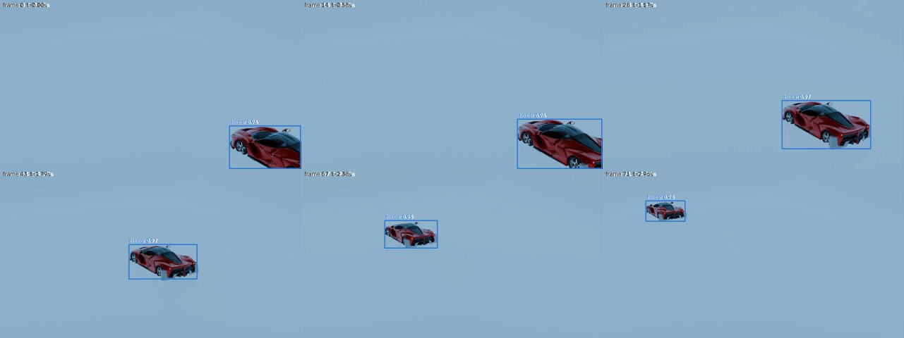
| 帧 | t (s) | 物体 | 框 [x1, y1, x2, y2] | 置信度 |
|---|---|---|---|---|
| 0 | 0.00 | the car | [651.0, 357.5, 851.9, 478.7] | 0.957 |
| 14 | 0.58 | the car | [612.7, 338.7, 851.6, 478.9] | 0.960 |
| 28 | 1.17 | the car | [508.6, 285.8, 759.6, 422.9] | 0.966 |
| 43 | 1.79 | the car | [365.3, 214.7, 558.2, 312.5] | 0.968 |
| 57 | 2.38 | the car | [236.2, 146.3, 385.1, 224.2] | 0.948 |
| 71 | 2.96 | the car | [123.0, 90.8, 233.2, 148.8] | 0.942 |
帧 43（t = 1.79 s）得分 0.968 最高，且框不贴图像边缘，用它的框作为提示。
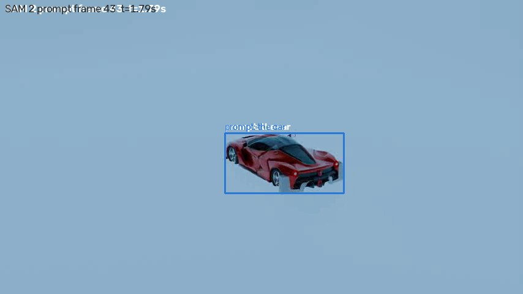
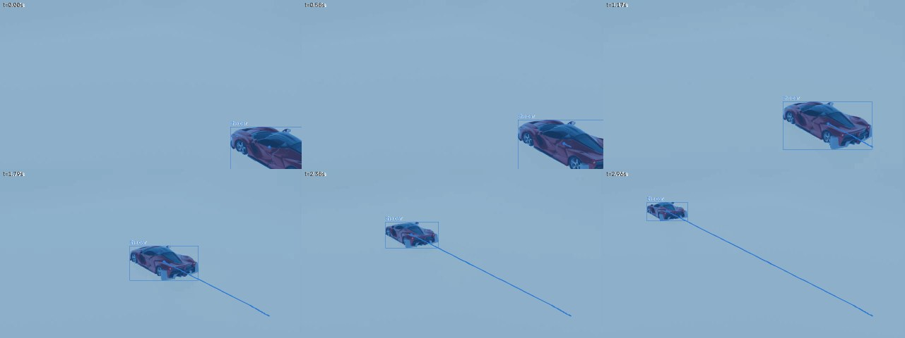
depth_info 只给了两个时刻的距离。车的视大小随时间变化，按针孔关系 Z(t) = c / h(t) 外推到每一帧，常数 c 用两个已知点的平均锚定。大小依据取框宽和框高中变化较小的那个（这里是高），避免把转向造成的宽度变化误当成接近相机。
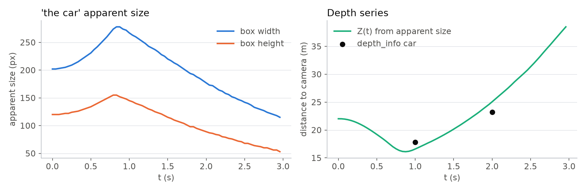
先尝试三维公式：真实加速度² = (横向加速度 / f)² + 径向加速度²。但深度序列给出的径向加速度是 10.4 m/s²，已经超过 prior 的 5 m/s²（深度外推对旋转的车不够准确），横向份额无法求解。于是回退到保守做法：横向份额取 prior 的 10%，即 1.58 m/s²。
对照：用真值反推（车长 4.45 m 在 21.7 m 处占 220 px），真实焦距约 1070 px，这里的估计偏大约 11%。这一步是本案例最大的误差来源，也是加速度 prior 类题目普遍的难点。
把阶段 2 和阶段 3 的分步估计换成一个联合模型：一个有朝向的三维长方体（L、W、H）沿匀加速轨迹 p(t) = p₀ + v₀t + ½at² 运动，朝向跟随水平速度方向（起步阶段速度接近零时与整段平均方向混合，避免翻转），经针孔相机（焦距 f）投影。把 8 个角点的投影外接框与 SAM 2 观测到的 72 个框做最小二乘，同时约束两个 depth_info 锚点和 |a| = 5 m/s²。13 个未知数，约 300 个观测，scipy 几秒解完。几何库目前有长方体、球、圆柱、三棱柱四种基元。
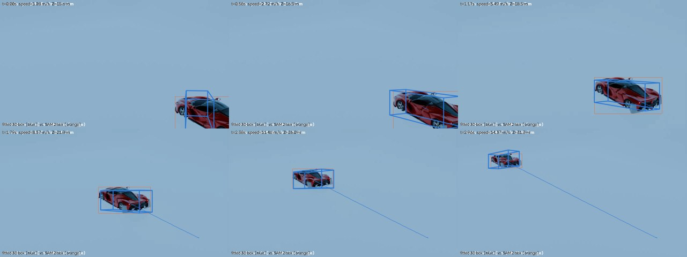
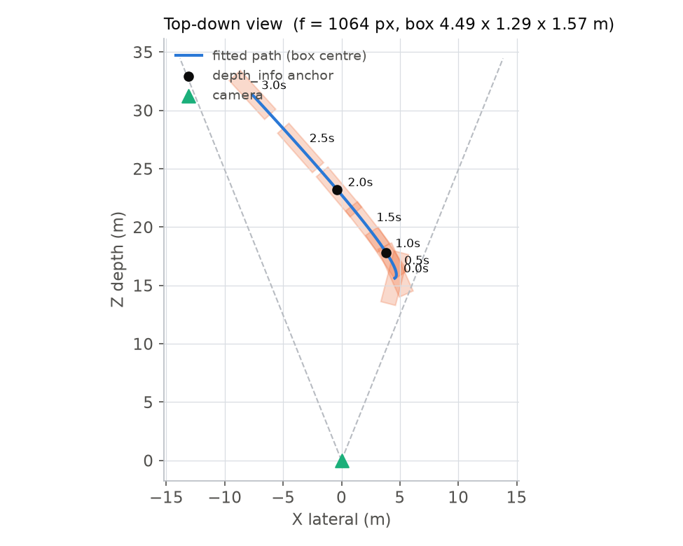
对照组：把焦距固定在真值 855 px 再拟合，线框视频见 fit3d_box_f855.mp4。此时盒子被拉宽到 3.0 m（真值 2.2），说明即使焦距对了，长方体模型本身对斜视角的车仍会把宽度估大。
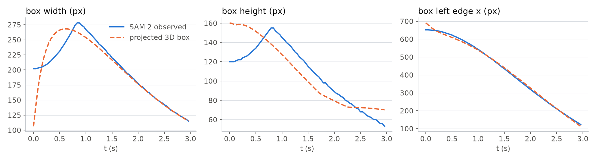
把 f 固定在不同值分别拟合，框残差随 f 增大单调下降，但答案却从偏大 25% 一路滑到偏小 30%。也就是说，观测本身更"喜欢"大焦距加小物体的组合，真实焦距（约 855）在数据上并不占优。原因是尺度歧义：所有横向尺寸和 f 一起放大，图像完全不变；深度锚点只固定了 Z，加速度 prior 只固定了 |a|，而 |a| 在径向和横向之间怎么分配是自由的。车几乎沿视线运动时，这个自由度几乎没有观测能约束。f 完全自由时解滑到 2000 以上。
| 设置 | f (px) | 框残差 (px) | 速度 1 s | 速度 2 s | 长 L | 宽 W | 高 H | 径向加速度 a_z |
|---|---|---|---|---|---|---|---|---|
| 真值 | ≈855 | — | 4.8 | 9.8 | 4.45 | 2.23 | 1.15 | — |
| f fixed 700 | 700 | 19.2 | 6.18 | 11.18 | 4.78 | 3.2 | 2.28 | 2.97 |
| f fixed 855 | 855 | 15.1 | 5.36 | 10.35 | 3.73 | 3.04 | 1.96 | 3.48 |
| f fixed 1070 | 1070 | 11.7 | 4.65 | 9.64 | 2.62 | 2.88 | 1.66 | 3.87 |
| f fixed 1300 | 1300 | 9.7 | 4.17 | 9.16 | 1.97 | 2.55 | 1.44 | 4.13 |
| f fixed 1600 | 1600 | 8.9 | 3.78 | 8.77 | 1.57 | 2.11 | 1.22 | 4.4 |
| f fixed 2000 | 2000 | 8.4 | 3.48 | 8.47 | 1.19 | 1.76 | 1.01 | 4.61 |
给"车长大约 4.5 m"一个 σ 约 33% 的弱先验，f 收敛到 1064，两个速度的误差降到 3% 以内。即使先验猜错（车长 6 m），速度仍在 5% 以内，因为速度主要由深度序列和 |a| 决定，先验只负责把尺度歧义钉住。
| 设置 | f (px) | 框残差 (px) | 速度 1 s | 速度 2 s | 长 L | 宽 W | 高 H | 径向加速度 a_z |
|---|---|---|---|---|---|---|---|---|
| 真值 | ≈855 | — | 4.8 | 9.8 | 4.45 | 2.23 | 1.15 | — |
| f free | 2016 | 8.4 | 3.47 | 8.47 | 1.18 | 1.75 | 1.0 | 4.61 |
| f free + weak prior L≈4.5 m | 1064 | 11.0 | 4.68 | 9.6 | 4.49 | 1.29 | 1.57 | 3.17 |
| f free + wrong prior L≈6 m | 961 | 12.5 | 5.0 | 9.85 | 5.99 | 0.27 | 1.65 | 2.76 |
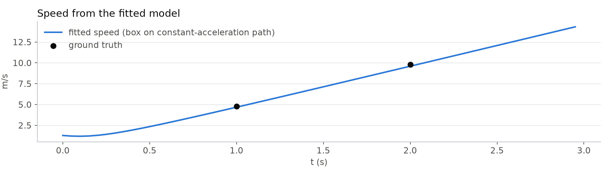
阶段 2.5 的结论是长方体和跑车轮廓不匹配。这里换一条路：从 SAM 2 跟踪里挑一帧车最大且完整在画面内的帧（第 21 帧），按框裁下来放大到 1074 × 600，发给 Meshy 的 image-to-3D 接口生成网格。耗时 105 秒（Meshy 计时，含轮询 111 秒），消耗 30 credits（账户余额 9662 → 9632，后台核对一致）。按每个需要网格的物体 30 credits 估算，测试集 409 个场景若每场景 1 到 2 个网格，需要 12k 到 24k credits，当前余额够约 320 个网格，因此网格只留给车辆、动物、人这类基元明显不够用的物体，球、盒子、圆柱继续用解析基元。网格没有绝对尺度，尺度仍由 depth_info 和 prior 决定；它提供的是正确的形状和长宽高比例。
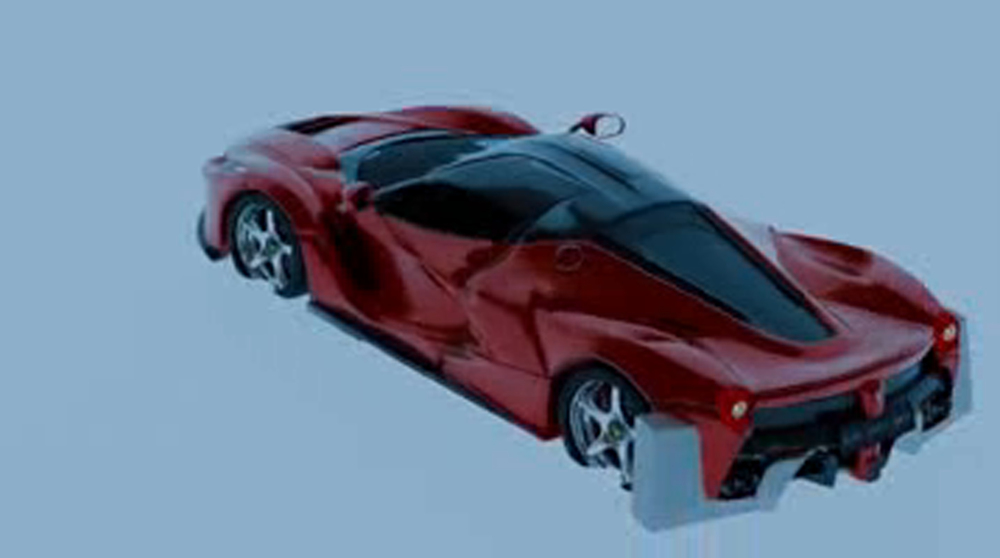
输入：单帧裁图，斜后方视角，背景是均匀的浅蓝。
输出：36,000 顶点、30,049 面的三角网格（GLB + OBJ），带纹理。不是水密网格，但对轮廓投影无影响。
质量：右侧是 Meshy 返回的缩略图，下方是网格的三视图点云。车头、车顶弧线、四个车轮、尾部扩散器都重建出来了，连输入图里看不到的车头正面也被合理补全。
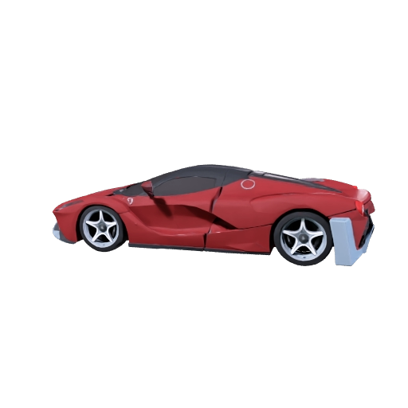
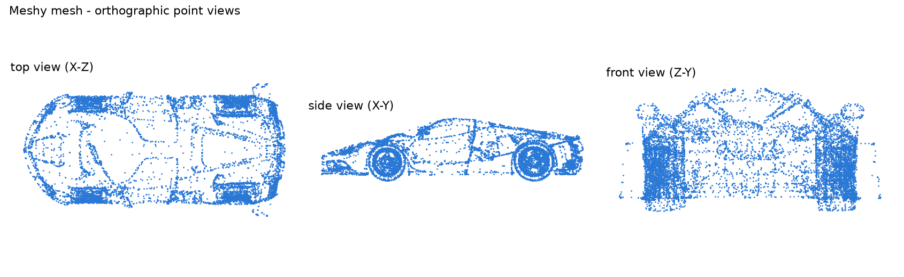
| L : W : H | 若 L = 4.45 m，则 W | 则 H | |
|---|---|---|---|
| 真值 | 1 : 0.501 : 0.258 | 2.23 m | 1.15 m |
| Meshy 网格（有向包围盒） | 1 : 0.549 : 0.236 | 2.44 m（+10%） | 1.05 m（−9%） |
| 阶段 2.5 长方体拟合 | 1 : 0.287 : 0.350 | 1.29 m（−42%） | 1.57 m（+37%） |
只要能把一个维度的尺度钉住（depth_info 加 prior，或弱先验），另外两个维度就跟着网格比例走。下面直接验证。
把阶段 2.5 的长方体换成这个网格：从网格表面采 1500 个点，按主轴对齐到物体坐标系（最长轴为车头方向，GLB 的 Y 轴为上），只剩一个尺度参数 L，宽和高按网格比例跟随。其余完全一样：匀加速轨迹、针孔相机、两个深度锚点、|a| = 5 的约束。网格的前后方向无法从形状自动判断，因此两种朝向各拟合一次，取代价更低且焦距不在边界上的那个。
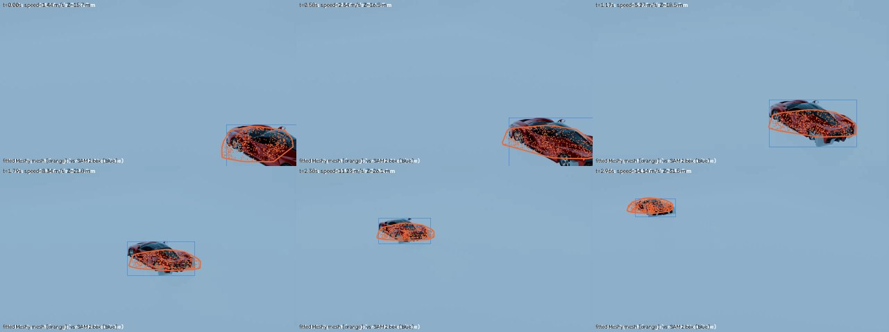
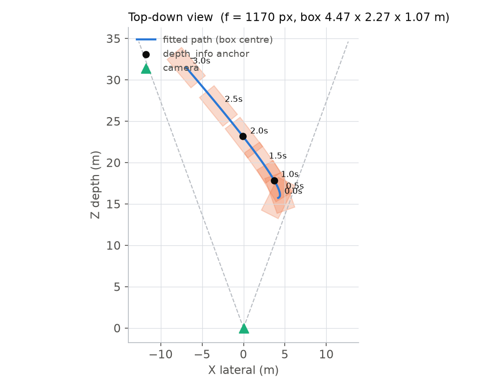
| 设置 | f (px) | 框残差 (px) | 速度 1 s | 速度 2 s | 长 L | 宽 W | 高 H | 径向加速度 a_z |
|---|---|---|---|---|---|---|---|---|
| 真值 | ≈855 | — | 4.8 | 9.8 | 4.45 | 2.23 | 1.15 | — |
| mesh, f free, sample 1 (flip=False) | 4759 | 14.3 | 3.09 | 8.09 | 1.54 | 0.78 | 0.37 | 4.91 |
| mesh, f free, sample 2 (flip=False) | 4523 | 14.6 | 3.08 | 8.08 | 1.59 | 0.81 | 0.38 | 4.9 |
| mesh, f free, sample 3 (flip=False) | 4598 | 14.4 | 3.08 | 8.08 | 1.58 | 0.79 | 0.38 | 4.9 |
| mesh, f free + weak prior L≈4.5 m (flip=False) | 1170 | 16.4 | 4.45 | 9.36 | 4.47 | 2.27 | 1.07 | 3.31 |
| mesh, f free + wrong prior L≈6 m | 912 | 17.5 | 5.33 | 9.75 | 5.66 | 2.86 | 1.36 | 1.7 |
| mesh, f fixed 855 | 855 | 18.3 | 5.5 | 9.98 | 5.59 | 2.82 | 1.34 | 1.65 |
| 对照：长方体 + 弱先验（阶段 2.5） | 1064 | 11.0 | 4.68 | 9.6 | 4.49 | 1.29 | 1.57 | 3.17 |
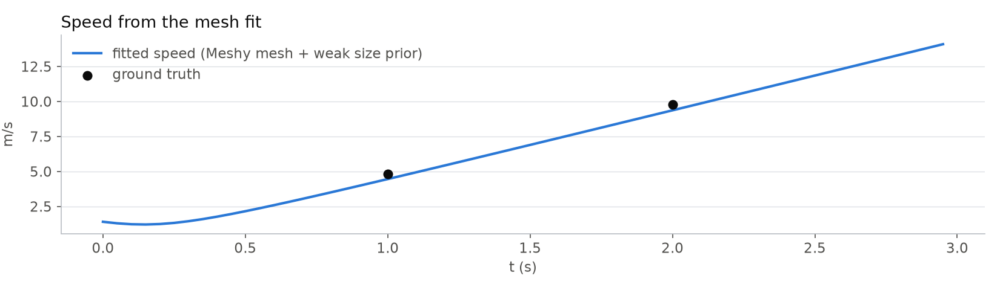
有了 f 和 Z(t)，把像素轨迹换到度量坐标：X = (x − cx) · Z / f，Y = (y − cy) · Z / f，Z 直接用深度序列。对三个分量分别做局部二次拟合求导，速度 = √(Ẋ² + Ẏ² + Ż²)。
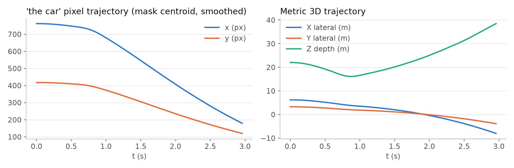
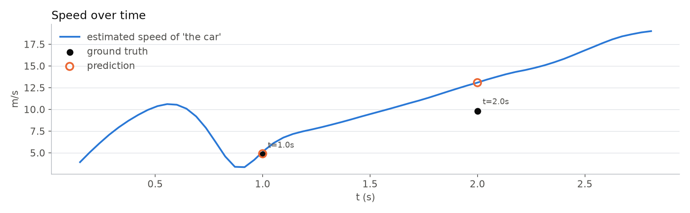
长、宽、高取轨迹中间帧附近框的像素尺寸，乘以 Z / f。长度取框的长边，宽度取短边，高度取框高。这辆车是斜后方视角，框的长边并不等于车长，所以长宽都偏小约 24%；框高包含了车顶的透视，高度偏大 47%。这是静态尺寸题普遍的问题，下一步要用掩码主轴和朝向来替代框。
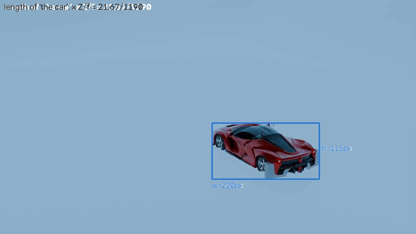
五个答案都通过合理范围检查，没有兜底。本场景没有其他变体，不做变体一致性。MRA 按官方定义在 10 个相对误差阈值上取平均。
| 问题 | 路径 | 预测 | 真值 | 预测/真值 | MRA |
|---|---|---|---|---|---|
| What is the speed of the car at 1s, in m/s? | speed3d | 4.897 | 4.8 | 1.02 | 1.0 |
| What is the speed of the car at 2s, in m/s? | speed3d | 13.078 | 9.8 | 1.33 | 0.6 |
| What is the length ((from the front to the back) of the car in meters? | length | 3.367 | 4.45 | 0.76 | 0.7 |
| What is the width (from the left wheel to the right wheel) of the car in meters? | width | 1.693 | 2.23 | 0.76 | 0.7 |
| What is the height of the car in meters? | height | 1.693 | 1.15 | 1.47 | 0.5 |
| 本视频平均 | 0.70 | ||||
每次改动都在这里追加一行：五道题的预测值、单题 MRA（小字）和平均 MRA。数据来自 iterations.json，由实验脚本自动写入。退步的版本也保留，避免重复踩坑。
| 版本 | 做了什么 | 速度 1 s 真值 4.8 | 速度 2 s 真值 9.8 | 长 真值 4.45 | 宽 真值 2.23 | 高 真值 1.15 | 平均 MRA |
|---|---|---|---|---|---|---|---|
| v1 流水线 2026-10-05 | SAM 2 跟踪 + 分步标定（焦距由加速度 prior 回退路径估计 1190）+ 外接框量尺寸 速度 2 s 偏大 33%，长宽偏小 24%，高偏大 47% | 4.897 1.0 | 13.078 0.6 | 3.367 0.7 | 1.693 0.7 | 1.693 0.5 | 0.70 |
| v2 长方体联合拟合 2026-10-05 | 长方体 + 匀加速轨迹 + 深度锚点 + |a|=5 + 弱先验 L≈4.5（σ≈33%），外接框残差 f=1064；速度准了，宽高因长方体与车身轮廓不匹配仍差 40% | 4.679 1.0 | 9.599 1.0 | 4.494 1.0 | 1.289 0.5 | 1.572 0.6 | 0.82 |
| v3 网格联合拟合 2026-10-05 | Meshy 网格替代长方体（1500 表面采样点），其余同 v2，外接框残差 f=1175；五个量全部进 10% 以内 | 4.437 0.9 | 9.352 1.0 | 4.474 1.0 | 2.27 1.0 | 1.07 0.9 | 0.96 |
| v4 网格 + 仅平移 2026-10-05 | 假设车不转动：朝向为一个固定未知角度（1 参数），其余同 v3 f=1725，yaw=-94°，框残差 10.9 px（v3 为 16.1） | 3.566 0.7 | 8.563 0.8 | 4.478 1.0 | 2.243 1.0 | 1.069 0.9 | 0.88 |
| v5 网格 + 掩码 IoU 2026-10-05 | 残差从外接框换成投影凸包与 SAM 2 掩码的 1 − IoU（1/4 分辨率），其余同 v3 退步。f=1800，速度 2 s 偏大 40%。栅格化的 1−IoU 对最小二乘求解器来说不光滑：数值雅可比在小步长下几乎为零，解卡在初始化附近或滑向尺度退化方向。掩码本身干净（无阴影，占外接框 66%），问题在残差形式而非数据 | 3.369 0.7 | 13.765 0.5 | 3.754 0.8 | 1.905 0.8 | 0.899 0.7 | 0.70 |
官方 GPT-5.1 基线在整个验证集的平均是 0.49。这个案例里动态题做得好，静态题受视角影响，正好体现了当前流水线的长处和短板。